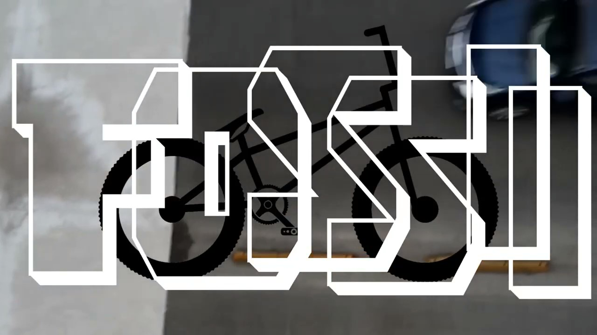
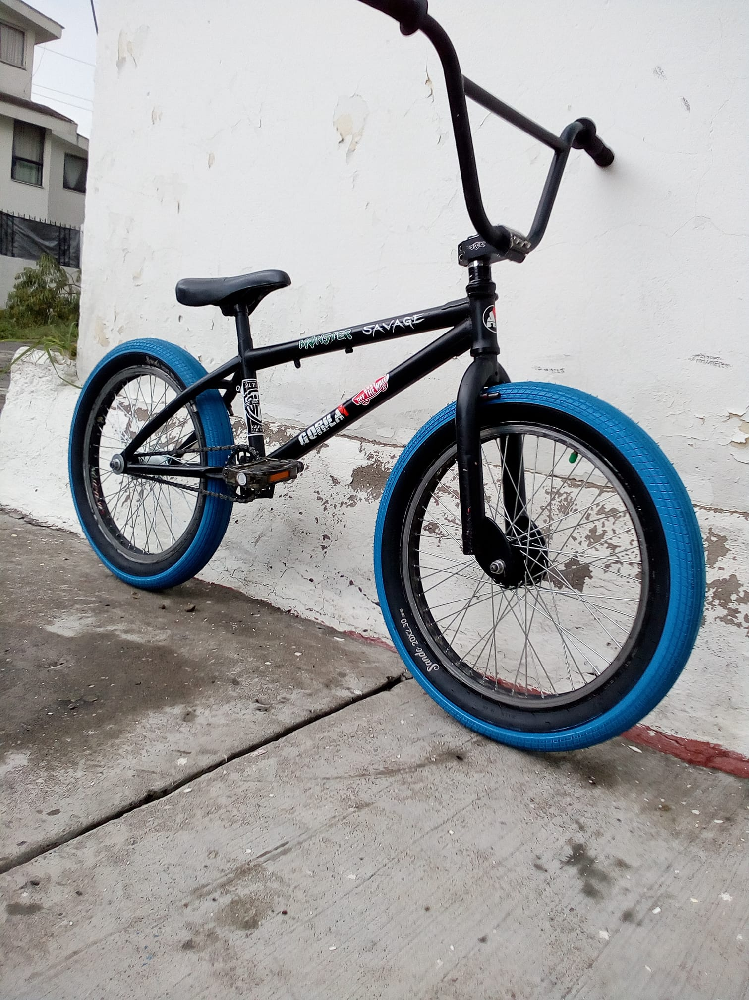
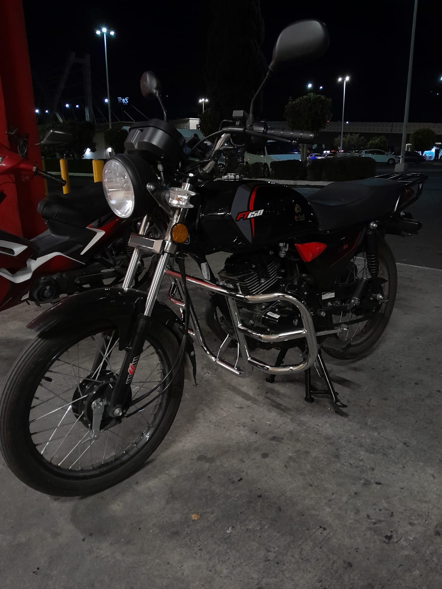

BIENVENIDOS A MI BLOG
HOLA YO ME LLAMO ALEXIS
ESPERO QUE SE ENCUENTREN MUY BIEN Y QUE EN SU VIDA LES ESTE LLENDO MUY BIEN
LES DOY LA BIENVENIDA A ESTE MI BLOG
LES CONTARE UN POCO DE MI:
Mi nombre completo es: ALEXIS CORTES SILVA, naci un 2 de julio del año 2005, actualmente estoy
por cumplir 19 años, lo que me encuentro haciendo actualmente es trabajando de repartidor de comida
en la ciudad de puebla en Mexico y es pues en donde he vivido y resido a lo largo de estos 19 años
y ultimamente me he interesado mucho en el ambito de la programacion que incluso ya tengo un
certificado en HTML Y CSS que no son lenguajes como tal, pero con esto que he aprendio pude hacer
esta pagina que quiza no es una pagina muy sofisticada pero a mi gusto tiene un buen diseño y me
gustaria encontrar un empleo como desarrollador pero apenas soy un programador Jr entonces tengo que
agarrar experiencia.

Unos de mis hobbies favoritos y que es el deporte que actualmente practico es el BMX y tambien
algo con
con lo que lo complemento es el grabar videos y editarlos. Y tambien el poder añadir
efectos y hacer
fotografias epicas ya sea propias o de amigos, ya que cuando yo era mas joven
agarre experiencia en como
utilizar filmora o cualquier editor de video y un poco en photoshop
o aplicaciones similares y pues si fue
algo que me gusto bastante y pues hasta la fecha me sigue sirviendo porque lo ocupo.

Tambien otro gusto que tengo son los autos y las motos tambien me gustan muchos los motores.
Bueno espero que les haya gustado esta introduccion para que sepan un poco de mi y en los demas
apartados tengo una serie de fotos y videos de mis experencias en bicicleta a lo largo de estos años
y otras situaciones y aventuras mas y algunos de mis proyectos que he hecho.